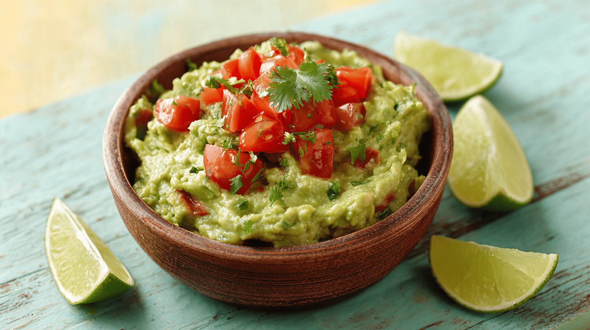

Guacamole

Guacamole is a delicious and versatile Mexican dip made primarily from ripe avocados. It’s a perfect
accompaniment to tortilla chips, tacos, burritos, or even as a spread for sandwiches. The creamy texture of the
avocados combined with the fresh flavors of lime, cilantro, and onions creates a vibrant and flavorful dip that
is loved by many.
Ingredients
- 3 ripe avocados
- 1 lime, juiced
- 1/2 cup finely chopped red onion
- 1 jalapeño, finely chopped (optional)
- 1/4 cup chopped fresh cilantro
- 2 cloves garlic, minced
- 1 tsp salt
- 1/2 tsp black pepper
Instructions
- Cut the avocados in half, remove the pit, and scoop the flesh into a mixing bowl.
- Mash the avocados with a fork until smooth or chunky, depending on your preference.
- Add the lime juice, red onion, jalapeño (if using), cilantro, and garlic to the bowl.
- Season with salt and pepper to taste.
- Mix everything together until well combined.
- Chill in the refrigerator for at least 30 minutes before serving.
Home